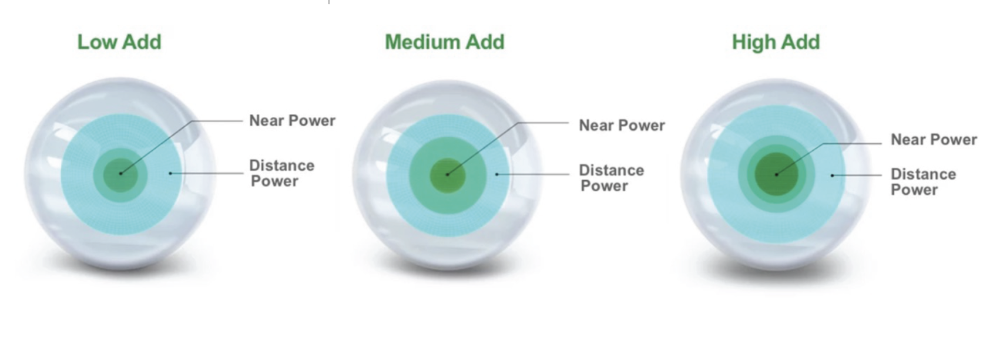
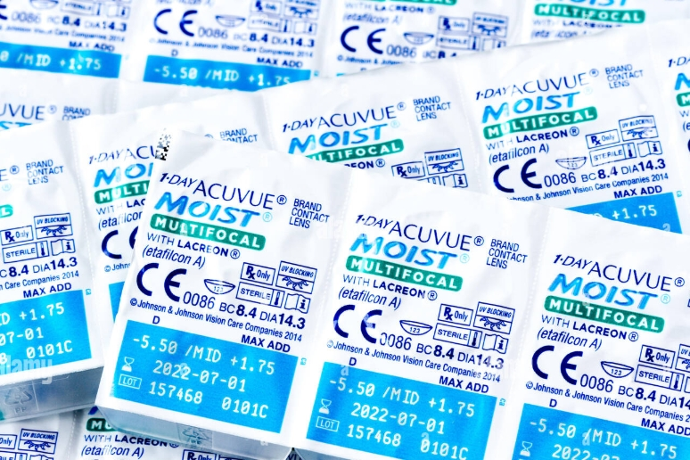
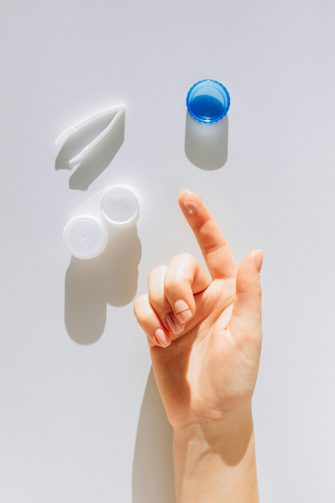

คอนแทคมัลติโฟคอลเหมาะกับคุณไหม?
ก่อนไปถึงเรื่องเทคโนโลยีและ case study — ลองเช็ค 3 ข้อนี้ก่อนครับ
- ✓ สายตาสั้นไม่เกิน –9.00 D
- ✓ สายตาเอียงไม่เกิน –0.75 D
- ✓ มีสายตายาวตามอายุ (อายุ 40+)
- ✓ มีประสบการณ์ใส่คอนแทคเลนส์ชนิดอื่นมาแล้ว
- ✓ สมองคุ้นเคยกับการมองผ่านคอนแทคแล้ว
- ※ มือใหม่ใส่คอนแทคได้เช่นกัน — แต่ต้องใช้เวลา adapt นานกว่า
- ✓ ความคมชัดประมาณ 85–90% ของแว่น
- ✓ แลกกับการไม่ต้องพกแว่นอ่านเลย
- ※ ถ้าต้องการ 100% — แว่น Progressive เหมาะกว่า
โทรปรึกษาก่อนได้เลยครับ ฟรี ไม่มีค่าใช้จ่าย
คนสายตาสั้น –9.00 ที่ค่อยๆ ลดสายตาตัวเองจนมองไกลแทบไม่เห็น
พี่เขาใส่คอนแทคเลนส์มาตลอดชีวิต ค่าสายตาจริงคือ –9.00 D ทั้งสองข้าง พอเลย 40 เริ่มอ่านจอคอมพิวเตอร์ไม่ชัด — อย่างที่รู้กันว่าสายตายาวตามอายุเริ่มมาแล้วครับ
แต่เพราะไม่ถนัดใส่แว่นเลย ไม่อยากพกแว่นอ่านทับ วิธีแก้ปัญหาของพี่เขาคือ… ลดค่าคอนแทคตัวเองลงมาเรื่อยๆ เพื่อให้จอคอมชัดขึ้น
อายุ 30 — ก่อนสายตายาวตามอายุ
ใส่คอนแทค –9.00 D ค่าสายตาจริง มองได้ทุกระยะ ไม่มีปัญหาอะไร
อายุ 40 — เริ่มลดค่าสายตาครั้งแรก
สายตายาวเริ่มมา อ่านจอไม่ชัด จึงลดจาก –9.00 เหลือ –8.50 เพื่ออ่านได้ มองไกลลดลงนิดหน่อย พอทนได้
↗ มองใกล้กลับมาดีขึ้น แต่แลกด้วยการมองไกลที่แย่ลง
อายุ 50 — ลดอีกครั้ง เพราะสายตายาวเพิ่มขึ้นอีก
Add Power ที่ต้องการสูงขึ้น ต้องลดต่ออีก จาก –8.50 เหลือ –8.00 เพื่ออ่านจอได้ แต่คราวนี้มองไกลแย่มาก
⚠️ ขับรถกลางคืนอันตราย ป้ายถนนพร่ามัว แต่ไม่มีทางออก ก็เลยทำต่อ
หลัง Fitting มัลติโฟคอลที่ Optical X
กลับมาใส่ค่าสายตาจริง –9.00 D พร้อม Add Power ที่เหมาะสม — ได้ทั้งสองระยะพร้อมกัน
✓ ไม่ต้องเลือกอีกต่อไป ได้ทั้งไกลและใกล้ในเลนส์เดียว
ตอนแรกไม่เข้าใจว่า "มัลติโฟคอล" คืออะไร จนผมบอกว่า "คอนแทคเลนส์โปรเกรสซีฟ" — แม้ทางวิชาการจะไม่ถูกต้องเปะ แต่ทำให้เขาเข้าใจทันทีครับ ผลที่ได้คือมองไกลชัดขึ้นจาก VA 0.4 เป็น 0.9 และอ่านจอคอมได้โดยไม่ต้องแลกอีกต่อไป
คนสายตาดีที่ต้องพกแว่นอ่านติดตัวตลอดเวลา
น้องเขาใส่คอนแทคเลนส์มาตั้งแต่มัธยม ค่าสายตา –3.50 D มองไกลชัดดีมาก VAVisual Acuity — ความคมชัดในการมองเห็น วัดเป็นเลขทศนิยม 1.0 = มองได้ชัดตามมาตรฐาน 0.9–1.0 แต่พออายุเลย 45 ทุกครั้งที่ต้องอ่านโทรศัพท์ ดูเอกสาร หรืออ่านราคาในเมนู…
ต้องหยิบแว่นอ่านหนังสือออกมาสวมทุกครั้ง
พกแว่นอ่านอยู่ในกระเป๋าตลอดเวลา
ประชุม ต้องหยิบแว่น อ่านเมนู ต้องหยิบแว่น โทรศัพท์ดัง ต้องหยิบแว่นก่อนรับ
ลืมแว่นไว้ที่บ้านวันหนึ่ง
อ่านเอกสารในห้องประชุมไม่ออกทั้งวัน — นั่นคือวันที่เธอตัดสินใจว่าต้องหาทางออกที่ดีกว่านี้
หลัง Fitting มัลติโฟคอลที่ Optical X
ใส่คอนแทคอันเดียว ไม่มีแว่นอ่าน ไม่มีแว่นสำรอง อ่านโทรศัพท์ได้ คุยกับลูกค้าได้ มองไกลชัดเหมือนเดิม
"ไม่ได้แค่สะดวกขึ้น — มันทำให้ฉันรู้สึกเป็นตัวเองอีกครั้ง ไม่ต้องคอยกังวลว่าแว่นอยู่ที่ไหน ไม่ต้องแก่แบบนั้นอีกต่อไป"
มีคอนแทคเลนส์สำหรับคนสายตายาวด้วยนะ — นี่คือหลักการที่ทำให้มันทำงานได้

คอนแทคเลนส์สำหรับคนสายตายาว หรือที่เรียกว่า มัลติโฟคอล ใช้หลักการที่ชาญฉลาดมากครับ — เลนส์มี หลาย Zone ซ้อนกันเป็นวงกลม แบบเดียวกับหัวเป้า โซนกลางสำหรับมองใกล้ โซนนอกสำหรับมองไกล และสิ่งที่เลือกว่าคุณจะ "ใช้โซนไหน" ในแต่ละช่วงเวลาคือ… ขนาดรูม่านตา
👁️ รูม่านตากับ Zone ของเลนส์
ขนาดรูม่านตาเปลี่ยนตามแสง — และนั่นคือกลไกที่ทำให้มัลติโฟคอลทำงานได้
☀️ แสงสว่างมาก
รูม่านตาหดเล็ก
ตาอยู่ใน Zone มองใกล้
อ่านหนังสือชัด ✓
🌤️ แสงปกติ
รูม่านตาขนาดกลาง
สมองเลือก Zone
ตามสิ่งที่มอง ✓
🌙 แสงน้อย / กลางคืน
รูม่านตาขยายใหญ่
ตาอยู่ใน Zone มองไกล
อ่านใกล้ลำบากขึ้น

จุดอ่อนที่ต้องรู้ก่อน
⚠️ แสงน้อย/กลางคืน — มองใกล้ลำบากขึ้น
เพราะรูม่านตาขยาย ตาจะอยู่ใน Zone มองไกลเป็นหลัก การอ่านโทรศัพท์ในห้องมืดอาจชัดน้อยกว่าปกติ
แต่ในชีวิตประจำวัน คนส่วนใหญ่ไม่ค่อยอ่านอะไรในที่มืดสนิทอยู่แล้วครับ
⚠️ แสงจ้ามาก — มองไกลอาจลดลงเล็กน้อย
ถ้าแสงสว่างมากเกินไป รูม่านตาหดเล็กมาก ตาจะอยู่ใน Zone มองใกล้นานกว่าปกติ
บางคนอาจรู้สึกได้ในสภาวะกลางแจ้งแดดจัด แต่สมองจะปรับตัวเองได้ครับ
⚠️ สายตาเอียงซ่อนอยู่ — ลด Effectiveness ลง
ถ้ามี สายตาเอียง (Astigmatism)ภาวะที่กระจกตาโค้งไม่สม่ำเสมอ ทำให้ภาพเบลอทุกระยะ ไม่ใช่แค่ระยะใดระยะหนึ่ง
ซ่อนอยู่เกิน –0.75 D จะลด Effectiveness ของมัลติโฟคอลลงอย่างมีนัยสำคัญ
นี่คือหนึ่งในสิ่งที่ต้องตรวจให้ชัดก่อน Fitting ครับ
การศึกษาจาก Yonsei University (2024) พบว่าคอนแทคมัลติโฟคอลไม่กระทบ Contrast Sensitivity แม้ในสภาพแสงน้อย (Mesopic conditions) ในกลุ่มผู้ที่ผ่านเกณฑ์การ Fitting ที่ถูกต้อง
Kim et al., Scientific Reports / Nature (2024) — Yonsei University College of Medicineผมบอกทุกคนเรื่องนี้ก่อน Fitting เสมอ
คอนแทคเลนส์มัลติโฟคอลให้ความคมชัด ประมาณ 85–90% เมื่อเทียบกับแว่นที่ใส่ค่าเต็ม และอาจลดลงอีกในกรณีที่มีสายตาเอียงซ่อนอยู่
แลกกับ 100% ของอิสรภาพ"
ถ้าต้องการ 100% สมบูรณ์แบบ — แว่น Progressive คือทางออกครับ แต่ถ้าอยากใส่คอนแทคอันเดียวแล้วใช้ชีวิตได้คล่อง นั่นคือสิ่งที่ตัวนี้ทำได้
สิ่งที่เสียอยู่ตอนนี้
- ลดค่าสายตา → VA ไกลแค่ 0.4–0.7
- พกแว่นอ่านทับ → ลืมแว่นก็อ่านไม่ออก
- ขับรถกลางคืนอันตราย
- ตาล้าเร็วจากการ compensate ตลอดวัน
มัลติโฟคอลให้
- VA ไกล 0.9 ด้วยค่าสายตาถูกต้อง
- มองใกล้ได้ในเลนส์เดียว ไม่ต้องพกแว่น
- ขับรถปลอดภัยขึ้น Binocular Vision ยังทำงาน
- 85–90% ของความคมชัดแว่น — แลกกับอิสรภาพ
ทำไมต้องมีค่า Fitting 1,500 บาท?
ตรวจสายตาทำแว่นปกติ
เสียบเลนส์ทดสอบในกรอบแว่น เปลี่ยนค่าได้ภายในวินาที ไม่ต้องแตะตาเลย
Fitting คอนแทคมัลติโฟคอล
ต้องใส่คอนแทคเข้าตาจริง รอเลนส์นิ่งบนกระจกตา แล้วค่อยวัดผล
มัลติโฟคอลทำงานผ่านสมองและรูม่านตาของคุณ — ถ้าแค่เสียบในกรอบแว่นทดลอง ระยะห่างจากเลนส์ถึงกระจกตาต่างกัน รูม่านตาไม่เหมือนกัน ผลที่ได้จะไม่ตรงกับความเป็นจริงเลยครับ
และนั่นคือเหตุผลที่ผมลงทุนซื้อ Trial Set มัลติโฟคอลมากกว่า 60 คู่ ไว้ให้ลูกค้าลองก่อนซื้อทุกราย เพราะสายตาแต่ละคนไม่เหมือนกัน
Full Refraction — วัดสายตาเต็มรูปแบบ
วัดค่าสั้น เอียง และ Add Power ที่แม่นยำ ในห้องตรวจ 6 เมตรมาตรฐาน ไม่ใช่เครื่องอัตโนมัติ
ทดสอบ Dominant Eye
ใช้เทคนิคเฉพาะทาง (Hole-in-card, Miles test) เพื่อกำหนด Add Power ที่ตาแต่ละข้างควรได้รับ
ใส่ Trial Lens เข้าตาจริง — รอ 5–10 นาที
รอให้เลนส์นิ่งบนกระจกตาก่อนถึงจะอ่านผลได้ นี่คือขั้นตอนที่ต่างจากการตรวจแว่นสิ้นเชิง
ทดสอบในสภาพจริง — โทรศัพท์ ป้าย ระยะต่างๆ
ดูว่าสมองของคุณ Lock-in กับ Zone ได้ดีแค่ไหน ในแสงต่างๆ ไม่ใช่แค่ในห้องสว่างเดียว
Fine-tune จนสมองยอมรับ
บางรายต้องปรับ Add Power หรือ Dominant Eye แล้วใส่ใหม่ 2–3 รอบ ต้องใช้ประสบการณ์จริงครับ
ต้องมีครบ 3 อย่าง: ① Trial Set 60+ คู่ (ลงทุนสูง) + ② ห้องตรวจ 6 เมตรมาตรฐาน + ③ นักทัศนมาตรที่มีประสบการณ์ Fitting มัลติโฟคอลมากกว่า 7 ปี
- ✔ Full Refraction ในห้องตรวจ 6 เมตรมาตรฐาน
- ✔ ทดสอบ Dominant Eye ด้วยเทคนิคเฉพาะทาง
- ✔ ใส่ Trial Lens เข้าตาจริง ไม่ใช่กรอบแว่นทดลอง
- ✔ Fine-tune จนสมองยอมรับ ก่อนตัดสินใจซื้อ
- ✔ คุ้มกว่าซื้อผิดค่า ทิ้งทั้งกล่อง (15 คู่ ~1,600 บาท)

คอนแทคมัลติโฟคอล 3 ตัวเลือก — ต่างกันยังไง?
ข้อมูลด้านล่างรวบรวมจากสถิติลูกค้าจริงของร้าน ไม่ใช่ข้อมูลจากบริษัท แต่ละคนมีความต้องการต่างกัน ผมจึงสต็อก Trial Set ทั้ง 3 ตัวไว้ให้ทดลองก่อนตัดสินใจเสมอครับ
|
Maxim
Maxim Soft 1 Day
Multifocal รายวัน
|
Biotrue
Biotrue ONEday
for Presbyopia รายวัน
|
Acuvue
1-Day Acuvue Moist
Multifocal รายวัน
|
|
|---|---|---|---|
| ค่าความชื้น | 💧💧💧💧💧 | 💧💧💧💧💧 | 💧💧💧💧💧 |
| ออกซิเจน | O₂O₂O₂O₂O₂ | O₂O₂O₂O₂O₂ | O₂O₂O₂O₂O₂ |
| การตั้งทรง | ⭐⭐⭐⭐⭐ | ⭐⭐⭐⭐⭐ | ⭐⭐⭐⭐⭐ |
| UV Blocking | YES | YES | YES |
| ประสิทธิภาพ มองไกล * |
10 / 10
|
10 / 10
|
8 / 10
|
| ประสิทธิภาพ มองใกล้ * |
8 / 10
|
7 / 10
|
10 / 10 ★
|
| รองรับสายตาเอียง | ✗ ไม่รองรับ | ✗ ไม่รองรับ | ✗ ไม่รองรับ |
| รองรับสายตาสั้นถึง | –6.00 D | –9.00 D | –9.00 D |
| จำนวนโครงสร้าง | 2 โครงสร้าง | 2 โครงสร้าง | 3 โครงสร้าง |
| จุดเด่น |
|
|
|
| ข้อจำกัด |
|
|
|
| ราคา |
฿1,500
ต่อ 1 กล่อง (15 คู่)
|
฿1,400
ต่อ 1 กล่อง (15 คู่)
|
฿1,900
ต่อ 1 กล่อง (15 คู่)
|
คนที่เพิ่งเริ่มมีสายตายาว สั้นไม่เกิน –6.00 D อยากเริ่มต้นใส่มัลติโฟคอลครั้งแรก
คนสายตาสั้นมาก (ถึง –9.00 D) หรือต้องการระยะการใช้งานใกล้ที่แม่นยำ 40–50 cm
คนที่ต้องการ 3 โครงสร้าง (ไกล/กลาง/ใกล้) แต่ต้องใช้น้ำตาเทียมช่วย
* ค่าประสิทธิภาพมองไกลและมองใกล้เป็นค่าเฉลี่ยจากสถิติลูกค้าของร้าน ผลลัพธ์อาจแตกต่างกันในแต่ละบุคคล ขึ้นอยู่กับค่าสายตา, ขนาดรูม่านตา, และการตอบสนองของสมองต่อโครงสร้างเลนส์แต่ละแบบ การทดลองใส่จริงก่อนซื้อจึงเป็นสิ่งสำคัญที่สุดครับ
** รีวิวนี้เป็นการเก็บสถิติจากลูกค้าของร้านที่ได้ทำการใช้งานจริง โดยไม่มีค่าสายตาเอียงร่วมด้วย ข้อมูลนี้ไม่มี Bias ต่อผลิตภัณฑ์ใด อย่างไรก็ตามแต่ละบุคคล sensitivity ต่อโครงสร้างแต่ละตัวมีผลไม่เหมือนกัน ร้านจึงแนะนำให้ตรวจวัดสายตาอย่างละเอียดและทดลองเลนส์ เพื่อหาสายตาที่ดีที่สุดสำหรับแต่ละบุคคล
คุณเหมาะกับคอนแทคมัลติโฟคอลไหม?
ไม่ใช่ทุกคนที่จะได้ผลลัพธ์ดีเท่ากัน ก่อนตัดสินใจ Fitting ลองเช็คเงื่อนไขเหล่านี้ก่อนครับ
-
สายตาสั้นไม่เกิน –9.00 D
ครอบคลุมได้ถึง –9.00 D (Biotrue / Acuvue) หรือ –6.00 D (Maxim)
-
สายตาเอียงไม่เกิน –0.75 D
เอียงน้อยกว่านี้ สมองชดเชยได้เอง ผลลัพธ์ยังดี
-
ยอมรับความคมชัด 85–90% ได้
ไม่ได้ต้องการ 100% สมบูรณ์แบบในทุกระยะ แลกกับความสะดวกในชีวิตประจำวัน
-
น้ำตาพอเพียง ไม่แห้งมาก
ตาไม่แห้งเรื้อรัง หรือถ้าแห้งเล็กน้อย สามารถใช้น้ำตาเทียมช่วยได้
-
ใส่คอนแทคได้ไม่เกิน 10–12 ชั่วโมงต่อวัน
คอนแทครายวันควรถอดก่อนนอนทุกครั้ง
-
ไลฟ์สไตล์ที่ได้ประโยชน์ชัดที่สุด
ทำงานออฟฟิศ ประชุม เล่นกอล์ฟ ท่องเที่ยว ขับรถ — กิจกรรมที่ต้องใช้สายตาหลายระยะในวันเดียวกัน
-
สายตาเอียงมากกว่า –0.75 D
ค่าเอียงสูงทำให้โครงสร้างเลนส์ทำงานไม่เต็มประสิทธิภาพ ความคมชัดลดลงอย่างเห็นได้ชัด
-
มีโรคตาที่มีผลต่อรูม่านตา
เช่น ต้อหิน, โรคม่านตาอักเสบ, ผลข้างเคียงจากยาที่ทำให้รูม่านตาทำงานผิดปกติ
-
ตาแห้งเรื้อรังระดับรุนแรง
Dry Eye Syndrome ระดับ 3–4 ทำให้ทนใส่คอนแทคได้ไม่นาน
-
ต้องการความแม่นยำ 100% ตลอดเวลา
เช่น งานที่ต้องอ่านตัวเลขละเอียดมาก, ช่างเครื่องจักร, นักพิมพ์ดีด — แว่น Progressive เหมาะกว่า
-
ขับรถกลางคืนเป็นหลัก
แสงน้อยทำให้รูม่านตาขยาย Zone ใกล้ครอบงำ — มองไกลในความมืดจะลดลง